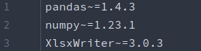
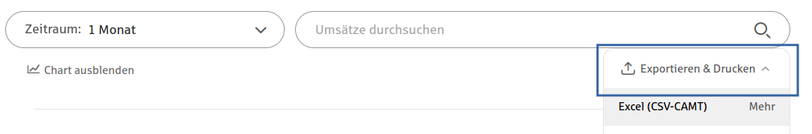
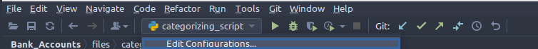
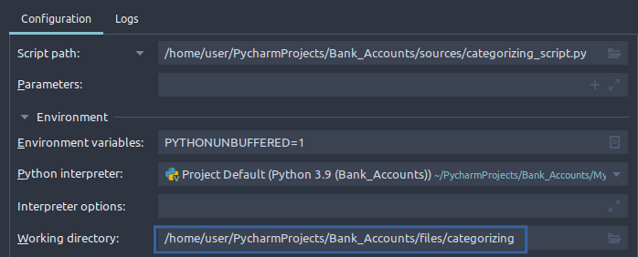
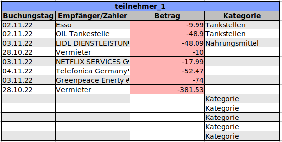
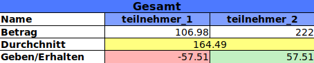

{% extends "base.html" %}
{% block body %}
Schritt für
Schritt Anleitung zur Bedienung der Software
- Laden Sie sich den Code von GitHub runter

- Installieren Sie die requirements.txt Abhängigkeiten

- Exportieren Sie eine CSV von ihrem Online-Banking

-
Definieren Sie die _columns.csv Datei.
Sollte der Spalten-Name ihrer Bank nicht dabei sein,
fügen Sie diesen hinzu. Mehr Infos in der
Github README

-
Definieren Sie Ihre Kategorien in der _categories.csv Datei.
Vermeiden sie zu kurze und nicht eindeutige Schlüsselwörter.

-
Sie haben drei Skripte zur Verfügung.
Jedes Skript verfügt über eine eigene Funktion

-
Beispiel der Ordnerstruktur.
Diese vordefinierte Ordnerstruktur dient als Beispiel und mögliche Vorlage.
Die roten Dateien sind die Outputs die Sie erhalten.

-
Current Working Directory. (CWD)
Definieren Sie für jedes Skript eine CWD
Die Input Dateien müssen in die CDW gelegt werden.
-
Beispiel der CWD Einstellung in Pycharm für categorizing_script.py
Klicken Sie auf Edit Configurations von dem Skript.

Stellen Sie hier ihre Working Directory ein.

-
Beispielbilder Output


-
Kontakt: go_and_code@web.de
Sollten sie Fragen oder Anregungen zu dieser
Software haben kontaktieren sie uns bitte per e-mail.
{% endblock %}